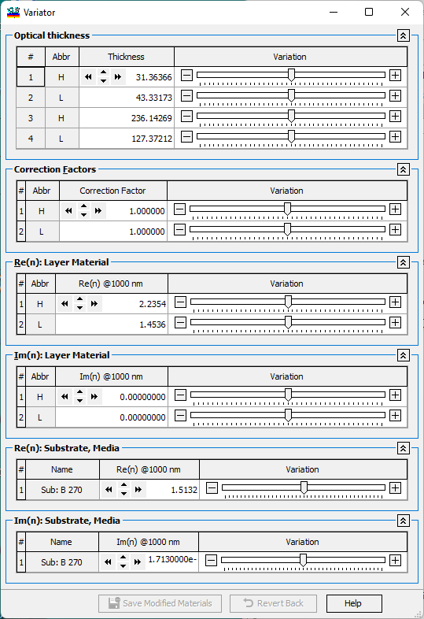

Variator
Variator
Navigation: OptiLayer Menu Commands > View Menu >
Variator
` <memorizeplots.html>`__ ` <idh_menu_view.html>`__ ` <idh_menu_data.html>`__
The Variator function allows you to study how the design performance changes with variations in layer thicknesses and refractive indices of the design and surrounding media. Using the Variator tool, you can explore the effects of different parameter variations on the performance of the design.

The Variator feature allows you to adjust the parameters of the design, substrate, and incident medium using sliders, [-] and [+] buttons, or numerical controls. By making these adjustments, you can instantly see how the design performance changes in response to these variations. These changes are reflected in all other OptiLayer windows, allowing you to study multiple effects simultaneously.
For dispersive materials, the variations are considered as offsets of the refractive index or extinction coefficient. Essentially, a constant value controlled by the Variator is added to the refractive index spectral dependence.
The “Revert Back” button enables you to restore the initial parameters if needed.
If you make any changes to the materials, the “Save Modified Materials” button becomes active. Clicking this button prompts OptiLayer to create copies of the initial materials in the Substrate and Layer Material databases. These copies are labeled with ‘ as a suffix to distinguish them from the original materials. Any subsequent save operation will update these modified files accordingly.